Adobe
Contents
Adobe#
Ici je vais vous expliquer comment remettre les licences Adobe à zéro (vous n’aurez normalement jamais a le faire mais c’est bien de savoir on sait jamais). Je vais vous montrer également comment crée des PKG avec Adobe console. et d’autre chose.
Adobe Console créer des PKG.#

Pour pouvoir rajouter / créer des pkg il faut dans le menu en haut et cliquer sur packs.
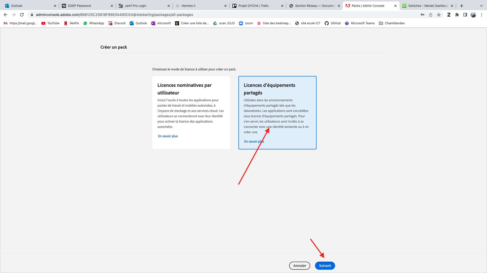
{kind=link}
Quand tu crées ton pkg tu peux choisir 2 choses soit licence partagée qui est pour le gymnase et/ou groupe en gros, ou licences nominatives par utilisateur qui sont utilisées pour gérer une seule personne à la fois.
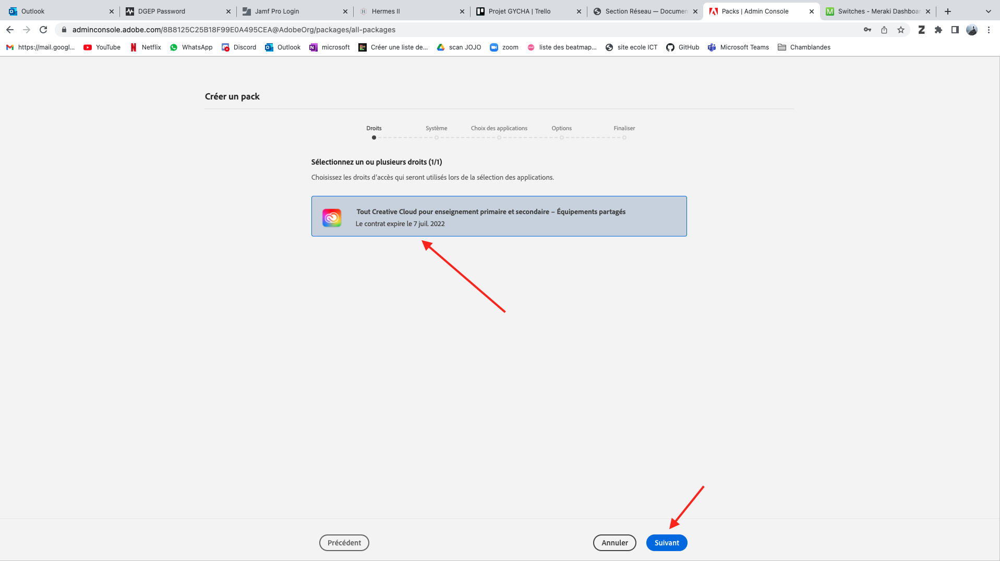
{kind=link}
Sélectionner la même chose que sur l’image ci-dessus. Ensuite cliquer sur le suivant.
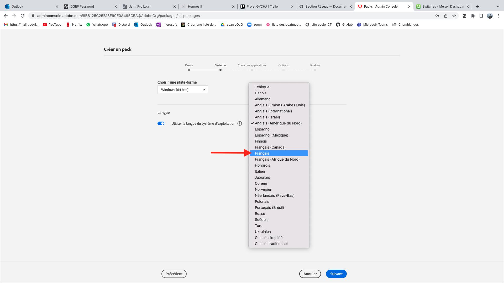
{kind=link}

sur cette fenêtre il y a plusieur paramètre a changer, tout dabord il faut changer la langue. Ensuite il faut selectionner pour quel OS vous voulez faire les PKG. Une fois que vous avez choisi ce qu’il vous convient cliquer sur suivant.
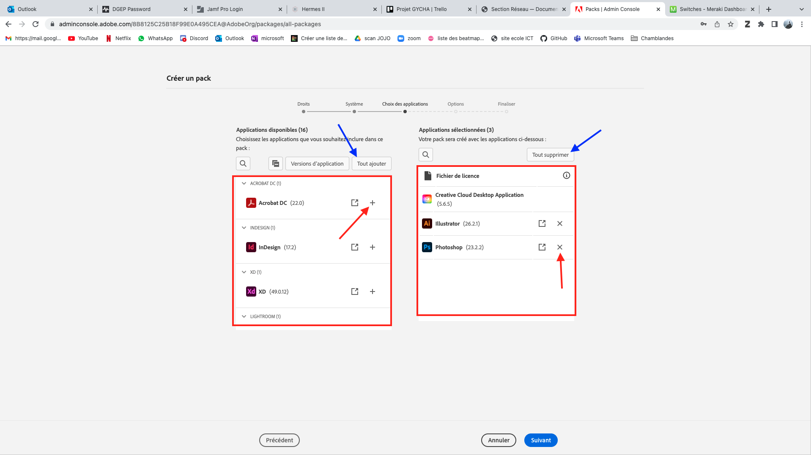
{kind=link}
c’est ici que vous allez définir quelle application vous allez mettre dans votre pkg, la flèche bleue montre comment tout supprimer ou tout rajouter. Les carrés rouges à gauche montrent les apps que vous pouvez rajouter, le carrer rouge à froite montrent les apps que vous avez rajoutés. Une fois que vous vous êtes dessider cliquer sur le suivant.

Lors de la sélection de paramètre il faut faire attention au premier paramètre de la page, (Activer l’installation en libre-service). Si vos faites des tests sur votre machine et que vous avez cocher la case cela pourrait vous poser un problème car vous ne pourrez plus installer adobe. Mais sur les postes du gymnase, c’est parfait parce que nous ne voulons pas que n’importe qui installe Adobe.
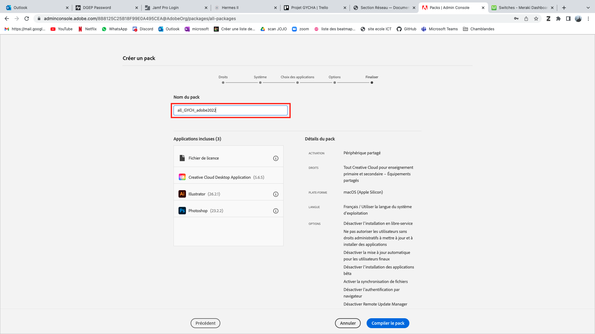
{kind=link}
Une fois que vous avez fait toutes ces étapes il sufis de cliquer sur “compiler votre pack” est attendre. Maintenant vous savez comment faire ;).
Comment donne une licences personnel / mobile#
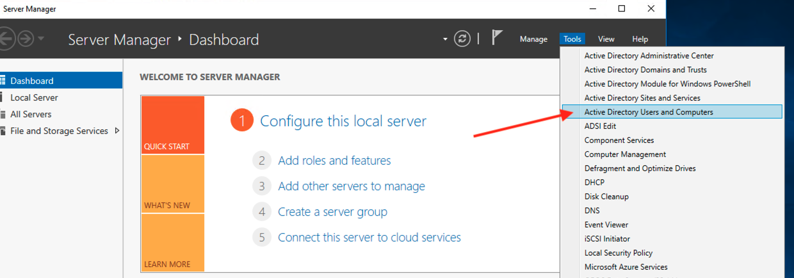
{kind=link}
Pour commencer il faut aller sur le serveur Windows (l’AD). ensuite il faut sélectionner (user and computer).
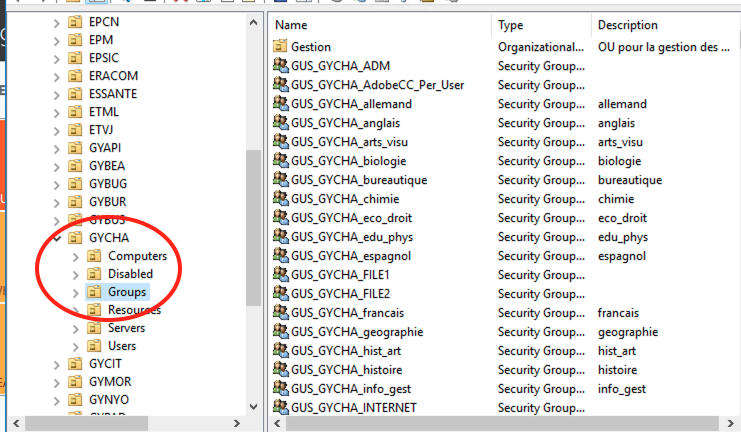
{kind=link}
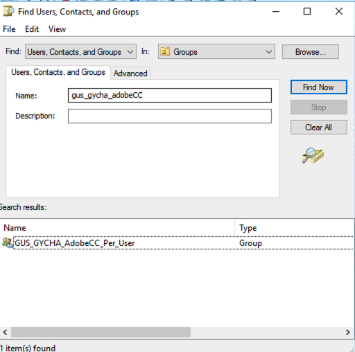
{kind=link}
Ensuite vous devez selectionner GYCHA > puis Groups. Si vous avez du mal a trouver le group vous pouvez simplement effectuer une recherche et le trouver plus rapidement.
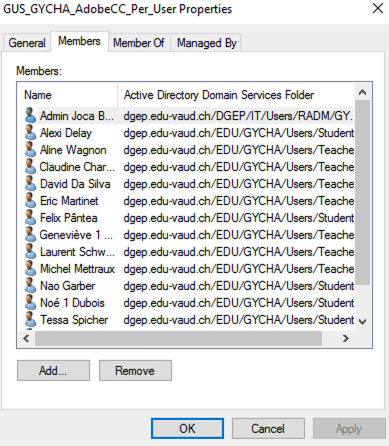
{kind=link}
Une fois que vous avez double-cliqué sur le groupe vous pourrez rajouter les personnes que vous voulez ou alors supprimer des utilisateurs qui fon parti du groupe.
Comment rénisialiser les liscence sur adobe console#
Pour pouvoir accéder à adobe console (via internet) il faut savoir quel compte utiliser. Pour cela il faut aller sur DGEP passowrd ou l’alternative s’il y en a une. Voici le lien pour accéder à DGEP PASSWORD : https://pass.dgep.edu-vaud.ch:9119/
Une fois que vous avez cliquer sur le lien connecter vous. Dans mon cas j’utilise mon compte admin : a-jbolli. Ensuite cliquer sur Connexion.
Une fois que vous êtes connecté, aller dans la barre de recherche et taper “Adobe” ensuite vous aller voir le compte, copier l’adresse puis cliquer sur ce lien : https://adminconsole.adobe.com/
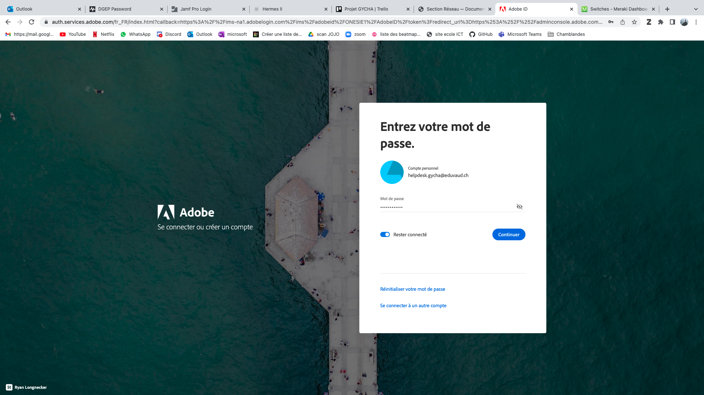
Coller l’adresse mail que vous avez copié juste avant puis cliquer sur “Continuer”. copier coller le mot de passe et connectez-vous.
Une fois connecter rendez-vous sur “pruduits” pour pouvoir ensuite voir tout ce que vous avez accès. Et entre autre pouvoir modifier les licences.
Une fois que vous avez réussi à accéder à cette fenêtre cliquée sur les licences par poste (Poste utilisé). Dans mon cas il y en a beaucoup car nous étions en train de l’installer sur tous les postes des salles d’informatiques du gymnase.
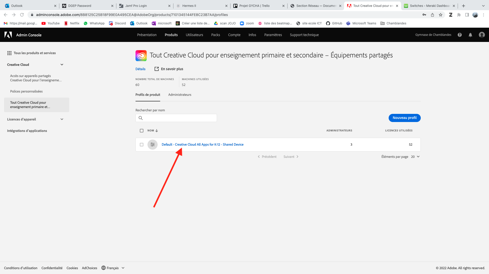
Ensuite cliquer sur “default” pour pouvoir accéder a differents paramètre dont celuil qui nous intersse.
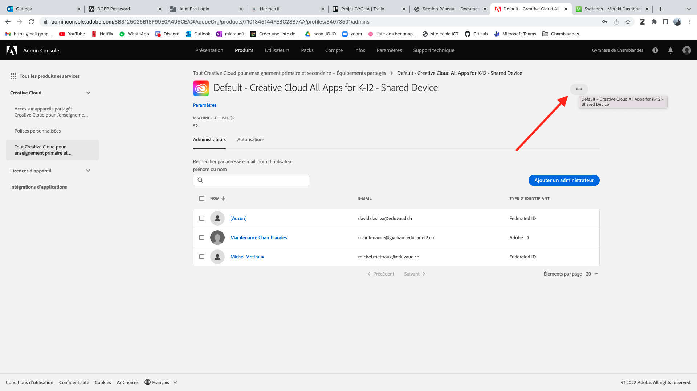
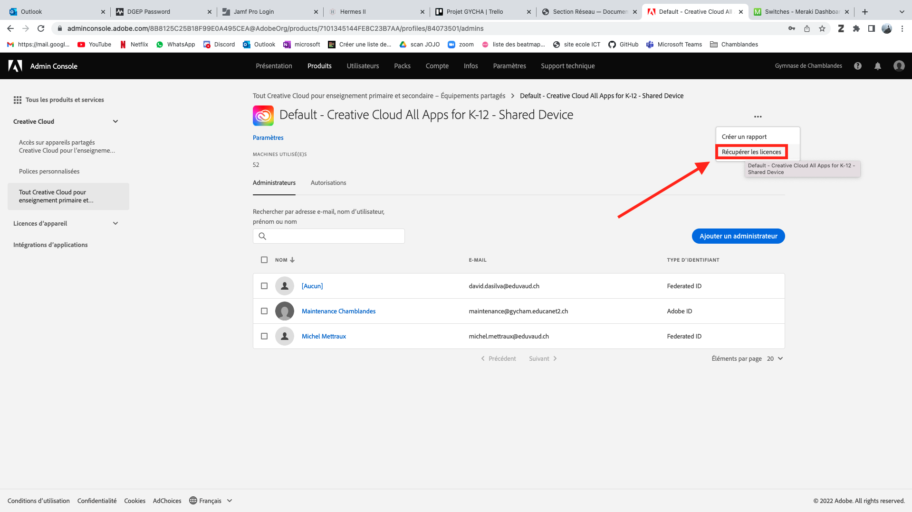
Ensuite cliquer sur les trois petits points puis récupérer les licences. ensuite si vous retournez sur le produit vous devriez normalement voir qu’il n’y a plus d’utilisateur (poste utilisé). Et voilà vous savez comment récupérer vos licences.